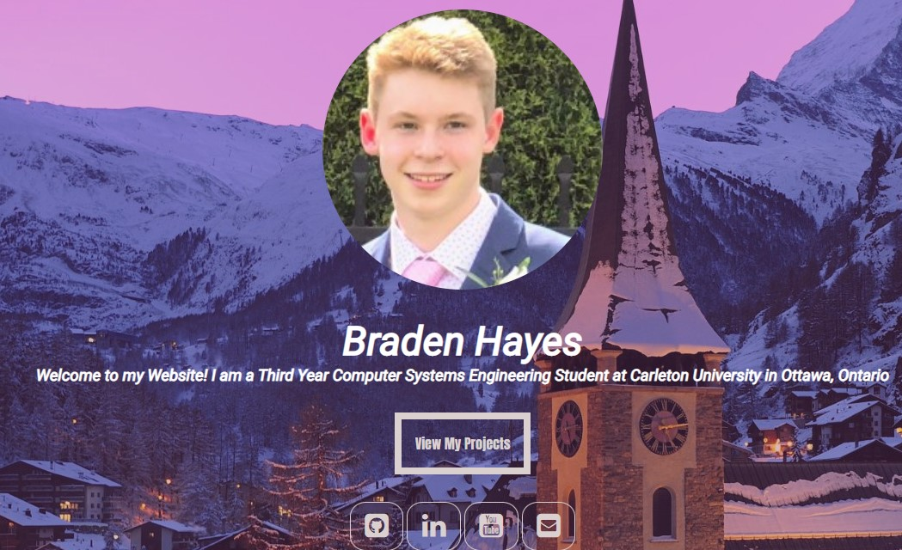

Archive to Present | Personal Site
My Website
I wanted a site that showed my work, my projects, and a bit of who I am outside of work. As my frontend skills improved, the site evolved with them.


It started with simple HTML and CSS, then changed over time as I learned more through work, school, and personal experimentation with different web approaches.
That ongoing iteration is part of the point. The site changes as I do, and it has always been a good place to try new ideas and present my work in my own way.